The robot · Chapter 5
Frames and TF2
Every measurement on the robot is taken in some frame: the lidar measures from its own centre, the camera along its optical axis, the IMU in its own axes. To combine them, and to say where the robot is in the room, ROS 2 keeps a tree of frames and the transforms between them. The library is TF2.
| Goal | Read the TF tree of the running stack, look up a transform at the right time and explain an ExtrapolationException, and find a wrong and a missing transform in a broken tree. |
| Time | 2.5 h |
| Before you start | Chapter 4: the stack starts with scripts/up.sh, and you can use ros2 topic, ros2 param and use_sim_time. Every terminal starts with source env.sh at the repository root. |
| You will learn | REP-103 axes and REP-105 frames; static and dynamic transforms; view_frames, tf2_echo and tf2_monitor; lookup_transform at the latest time and at a stamp; the three kinds of ExtrapolationException; the one transform in this stack that is wrong. |
A transform from frame A to frame B is a rotation $R$ and a translation $t$ that give the pose of B in A. It converts B coordinates into A coordinates, $p_A = R\,p_B + t$. Chains of transforms multiply as 4×4 matrices (module m00 has the formula). The tasks below only read transforms that TF has already composed; task 2.4 checks one composition by hand.
The outputs come from sessions with the stack up (scripts/up.sh), except task 3, which runs with the stack stopped.
Task 1: Read the tree of the running stack
1.1 Check the axis conventions
Confirm that the sensor frames follow REP-103.
REP-103 fixes units and axes for all of ROS: metres, radians, seconds, right-handed
frames, and for a body frame x forward, y left, z up. A positive yaw turns the robot left, so the {angular: {z: 0.5}}
command of chapter 4 turned it anticlockwise. Camera optical frames are the exception: z forward along the optical axis, x
right, y down.
tf2_echo A B prints the pose of B in A:
ros2 run tf2_ros tf2_echo base_link lidar_link
At time 0.0
- Translation: [0.000, 0.000, 0.100]
- Rotation: in Quaternion (xyzw) [0.000, 0.000, 0.000, 1.000]
- Rotation: in RPY (radian) [0.000, -0.000, 0.000]
- Rotation: in RPY (degree) [0.000, -0.000, 0.000]
- Matrix:
1.000 0.000 0.000 0.000
0.000 1.000 0.000 0.000
0.000 0.000 1.000 0.100
0.000 0.000 0.000 1.000
The lidar is 0.1 m above base_link and not rotated. At time 0.0 marks a static transform. The other fixed sensors:
ros2 run tf2_ros tf2_echo base_link camera_link # Translation: [0.280, 0.000, 0.030], no rotation
ros2 run tf2_ros tf2_echo base_link imu_link # Translation: [0.000, 0.000, 0.000], no rotation
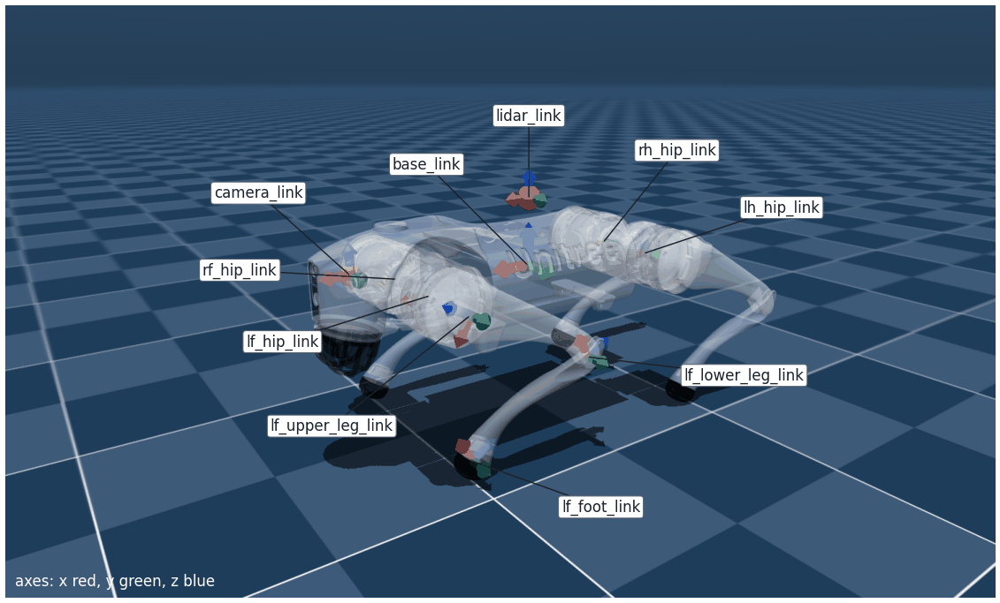
The MuJoCo Menagerie Go2 posed with the trunk 0.217 m above the floor, with this stack's URDF frame names: lidar_link 0.1 m above base_link, camera_link 0.28 m ahead and 0.03 m up, the four hips and the lf_ leg chain. Axes x red, y green, z blue: REP-103 body axes, x forward, y left, z up. The sensor frames are placed at their URDF offsets on the Menagerie base, which has no sensors of its own.
Check: the camera is 0.28 m ahead of base_link (+x) and the lidar 0.1 m above it (+z).
1.2 Name the world frames
Find out who publishes each of the REP-105 frames.
REP-105 names the frames of a mobile robot and the rules they follow.
| Frame | Fixed to | Rule | Published here by |
|---|---|---|---|
map |
the world | the robot's pose in it does not drift, but it may jump | AMCL (map to odom) |
odom |
the world | the robot's pose in it is continuous, but it drifts | odom_ekf (odom to base_footprint) |
base_footprint |
the robot, on the ground below the base, yaw only | CHAMP's base_to_footprint_ekf (base_footprint to base_link) |
|
base_link |
the robot's base | root of the URDF |
base_footprint comes from REP-120, written for humanoids and used by most legged
and wheeled robots since.
Odometry integrates motion: it never jumps, so a controller can follow a path in it, but its error grows. AMCL compares the
scan with a map: its error stays bounded, but each correction can move the estimate by centimetres or more in one step. So AMCL
does not publish the robot's pose; it publishes map to odom, the correction that makes map to odom to base_footprint
equal its estimate. The controller works in odom; the planner and the goal live in map.
ros2 topic info -v /tf | awk '/^Node name:/{n=$3} /Endpoint type: PUBLISHER/{print n}'
amcl
base_to_footprint_ekf
robot_state_publisher
odom_ekf
state_estimation_node
slam_toolbox
slam_toolbox
slam_toolbox has a publisher on /tf but is configured to send nothing (task 1.4), and CHAMP's state_estimation_node adds
no edge to the tree: every edge view_frames draws in task 1.4 belongs to one of the other four.
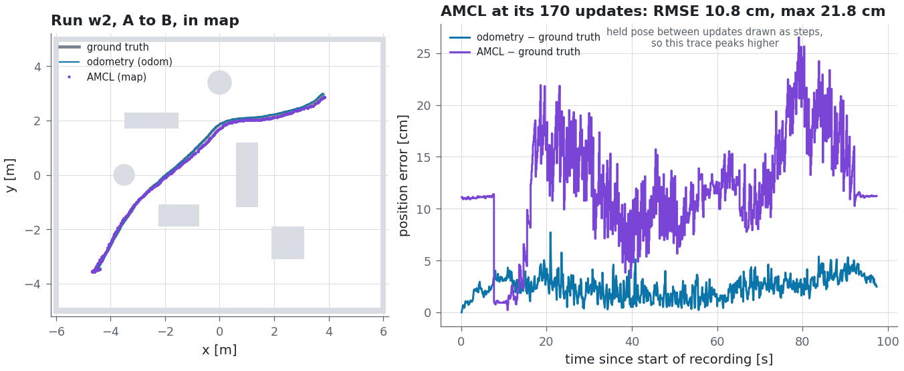
Run w2 from site/data/runs/w2/run.json (odometry aligned to ground truth on its first sample by export_run.py). The AMCL pose is held between its 170 updates, so its error saw-tooths while the robot walks; the odometry is continuous. Over one minute the odometry error stays small here; chapter 4 shows how it grows when the robot is left standing.
Check: amcl, odom_ekf and base_to_footprint_ekf are in the list.
1.3 Watch map jump and odom not
See the REP-105 split happen. docs/exercises/map_odom.py reads map to odom and odom to base_footprint (x, y, yaw)
and composes them into the robot's pose in map. Run it, tell AMCL the robot is somewhere else, and run it again.
/initialpose is what RViz's "2D Pose Estimate" button publishes:
ros2 topic echo --once /odom_gt --field pose.pose.position # x: 0.078, y: 0.011: the robot stands near marker A (-4.5, -3.5)
python3 docs/exercises/map_odom.py --ros-args -p use_sim_time:=true
ros2 topic pub --once /initialpose geometry_msgs/msg/PoseWithCovarianceStamped \
"{header: {frame_id: map}, pose: {pose: {position: {x: -3.77, y: -3.49}, orientation: {w: 1.0}}}}"
python3 docs/exercises/map_odom.py --ros-args -p use_sim_time:=true
The robot stood at (-4.42, -3.49) in map (marker A plus the /odom_gt offset), so this pose is 0.65 m ahead of the truth.
Then publish the true pose, x: -4.43, y: -3.49, and run the script a third time:
map->odom (-4.494, -3.481, yaw 0.007 rad) odom->base_footprint (-0.029, 0.091, yaw -0.036 rad) robot in map (-4.524, -3.390)
map->odom (-3.735, -3.574, yaw 0.039 rad) odom->base_footprint (-0.029, 0.098, yaw -0.031 rad) robot in map (-3.768, -3.477)
map->odom (-4.398, -3.586, yaw 0.031 rad) odom->base_footprint (-0.023, 0.090, yaw -0.042 rad) robot in map (-4.424, -3.496)
map to odom moved by 0.76 m and then by 0.66 m, each in one step. odom to base_footprint moved by 7 mm and 10 mm, its
slow drift while the robot stood, and did not react. The composed pose followed the pose you gave: the second line is 1.3 cm
from the false pose, the third 1.5 cm from the truth (/odom_gt x was 0.089 by then). Before the first message it was 0.14 m
off.
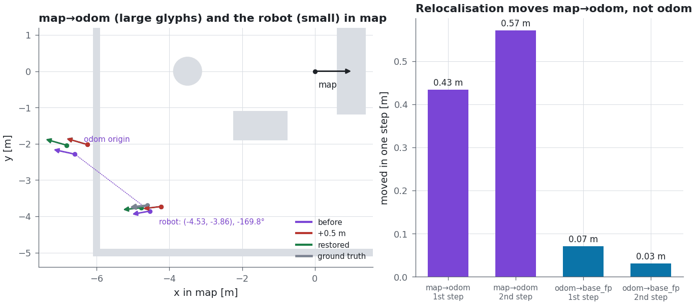
An earlier run of the same steps with a 0.5 m offset, drawn in map. Large arrows: the odom origin given by map to odom; small arrows: the robot, map to odom composed with odom to base_footprint; grey: ground truth. Right: the 0.43 m and 0.57 m steps of map to odom against 0.07 m and 0.03 m of odom to base_footprint over the same intervals.
In that earlier run the robot had stood for several minutes and the odometry had drifted by 2.6 m and 22 degrees; map to
odom had absorbed it, and the composed pose (-4.53, -3.86, -169.8 degrees) was within 0.18 m and 3.6 degrees of ground truth.
The map to odom stamps also ran about 1 s ahead of the odometry: AMCL stamps its transform transform_tolerance (1.0 s in
nav2_params.yaml) into the future, so that lookups at the current time succeed between its updates.
Check: after each /initialpose, map to odom moves by about the offset you gave, odom to base_footprint by a
centimetre or less, and "robot in map" lands within a few centimetres of the pose you published.
1.4 Draw the tree with view_frames
Get every edge of the tree with its rate.
ros2 run tf2_tools view_frames
# [view_frames]: Listening to tf data for 5.0 seconds...
# [view_frames]: Generating graph in frames.pdf file...
ls
# frames_2026-11-28_00.35.51.gv frames_2026-11-28_00.35.51.pdf
The edges, from the .gv file:
| Parent to child | Average rate | Kind |
|---|---|---|
map to odom |
10.3 Hz | dynamic (AMCL) |
odom to base_footprint |
50.3 Hz | dynamic (EKF) |
base_footprint to base_link |
49.8 Hz | dynamic (CHAMP) |
base_link to trunk, lidar_link, camera_link, chase_cam |
"10000" | static |
trunk to imu_link and the four *_hip_link |
static and 250 Hz | imu_link static; hips follow /joint_states |
*_hip_link to *_upper_leg_link to *_lower_leg_link |
250 Hz | dynamic (robot_state_publisher) |
*_lower_leg_link to *_foot_link, camera_link to camera_optical, lidar_link to lidar_visual |
"10000" | static |
A second session gave 10.29, 50.29 and 50.29 Hz for the first three rows. Static transforms show a rate of 10000 and a most
recent time of 0.0: they have no time. robot_state_publisher sends them once on /tf_static with TRANSIENT_LOCAL
durability, so a listener that starts later still receives them (chapter 4);
every other transform is streamed on /tf with a stamp. Every edge says Broadcaster: default_authority, so view_frames
does not tell you who publishes what; ros2 topic info -v /tf (task 1.2) does.
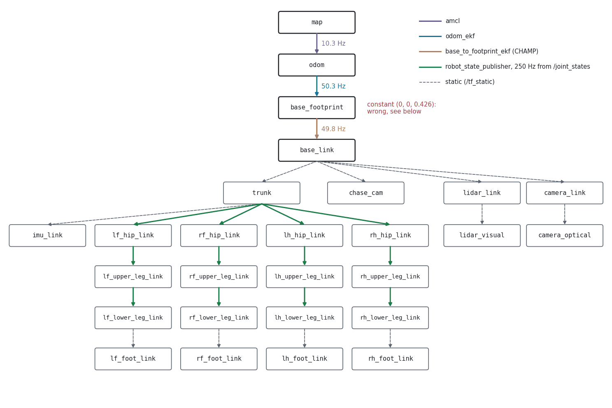
The table above as a tree. Edge colour is the publisher, from the "Kind" column and ros2 topic info -v /tf; dashed edges are static. Leg prefixes lf, rf, lh, rh are the URDF names.
Leg frames move with the joints, which in the ROS stack means /tf from robot_state_publisher and /joint_states; lidar_link and camera_link (orange spheres) stay fixed to base_link, which means /tf_static. MuJoCo Go2 with the legs moved kinematically in a trot pattern, not a recording of the Gazebo stack.
Each frame has exactly one parent. If two nodes publish the same child frame, TF keeps whichever message arrived last, so the tree changes from message to message. This stack has three places where that could happen, and each is configured away:
sim.launch.pystartsgt_odom.py, which also publishesodomtobase_footprint, only withodom:=gt. Run it that way and do not startestimation.launch.py.slam_toolboxwould publish its ownmaptoodom.config/slam.yamlsetsmap_frame: slam_mapandtransform_publish_period: 0.0, so it publishes no transform and AMCL stays the only parent ofodom.- CHAMP's own
footprint_to_odomEKF is not started, through thegt_odomargument that the patch adds (chapter 3).
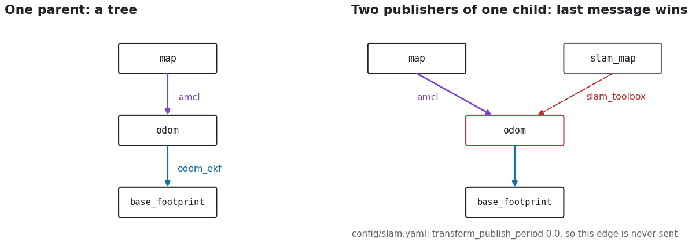
The second case from the list above, had slam_toolbox been left to publish its transform.
Check: the tree has map at the root, and map to odom runs near 10 Hz while odom to base_footprint runs near 50 Hz.
1.5 Read the transform that is wrong
Find the one transform in this stack that does not match the robot. odom to base_footprint should carry x, y and yaw;
base_footprint to base_link should carry the rest: trunk height, roll and pitch.
ros2 run tf2_ros tf2_echo base_footprint base_link
At time 707.845000000
- Translation: [0.000, 0.000, 0.426]
- Rotation: in Quaternion (xyzw) [0.000, 0.000, 0.000, 1.000]
...
At time 708.595000000
- Translation: [0.000, 0.000, 0.426]
- Rotation: in Quaternion (xyzw) [0.000, 0.000, 0.000, 1.000]
It is stamped and published at 50 Hz, but its value is a constant (0.426 m again in a later session, at time 24.105). Where it comes from:
ros2 topic echo --once /base_to_footprint_pose --field pose.pose # position z: 0.4259999990463257, identity rotation
ros2 topic echo --once /odom_gt --field pose.pose.position # z: 0.21658939177410852
CHAMP's state_estimation_node publishes /base_to_footprint_pose and base_to_footprint_ekf turns it into the transform.
The estimator needs foot contacts, and nothing publishes /foot_contacts in this setup (ros2 doctor in chapter 4 flagged
it). 0.426 m is the height for all joint angles at zero, legs straight down: 0.213 + 0.213 m, the thigh and calf lengths
(chapter 1 has the details). The simulator puts base_link 0.217 m above the floor,
so base_footprint lies 0.426 − 0.217 = 0.209 m below the floor, and everything expressed in base_footprint or odom is
0.209 m too high. This is a known open issue of the course; it is stated here, not fixed.
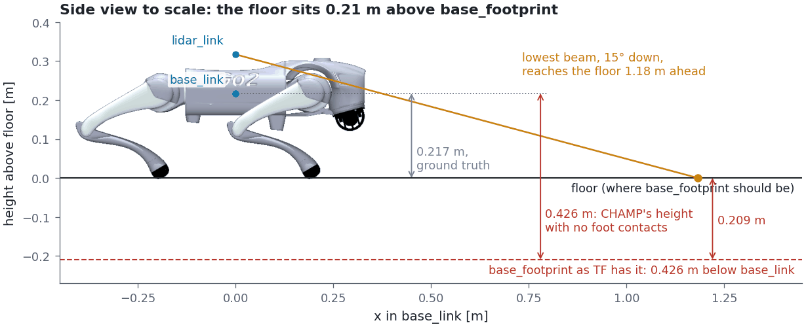
Side view to scale, MuJoCo Go2 posed at the ground-truth height of 0.217 m. The dashed line is where TF puts base_footprint; the lowest beam, drawn from the 0.1 m lidar offset, reaches the floor 1.18 m ahead, close to the 1.2 m ring measured below.
The floor confirms it. The lidar's lowest beam points 15 degrees down and hits the floor in a ring about 1.2 m around the
robot. docs/exercises/floor_ring.py takes one /lidar/points message, keeps the points of the lowest elevation angle, and
adds the base_footprint to lidar_link height from TF (0.1 + 0.426 m):
python3 docs/exercises/floor_ring.py --ros-args -p use_sim_time:=true
lowest ring (-15 deg): 900 pts horizontal distance median 1.174 m z in base_footprint median 0.211 mean 0.220 (lidar_link z in base_footprint 0.526)
gt z 0.2161
The distance is horizontal, $\sqrt{x^2 + y^2}$: the lidar is 0.526 − 0.211 = 0.315 m above that floor, and 0.315 m over 1.174 m is the 15 degree beam. The slant range along the beam is 1.22 m. A second run printed 1.173 m and 0.212.
The floor is at +0.211 m in base_footprint, against 0.426 − 0.2161 = 0.210 m predicted. lidar_odom.py keeps points
between 0.30 and 1.0 m in base_footprint, which is 0.09 to 0.79 m above the real floor
(chapter 9).
Trunk roll and pitch never reach TF either, so a point at distance $d$ is placed as if the trunk were level, off in height by
$d \sin\theta$: 0.19 m at 3 m for the largest roll of the chapter 7 walk (3.6 degrees), 0.15 m for the −2.95 degree pitch in
bags/v3. The derivation is in module m00. Code that
needs gravity alignment takes roll and pitch from /imu/data.

$\Delta z = d \sin\theta$ for the three tilts quoted above, with the 0.188 m and 0.154 m values at 3 m marked.
Check: tf2_echo base_footprint base_link prints z = 0.426 at every stamp, and /odom_gt puts the trunk near 0.217 m.
1.6 Read the camera optical frame
Confirm that camera_optical follows the optical convention. sensors.xacro attaches it to camera_link with
rpy="-1.5707963 0 -1.5707963":
ros2 run tf2_ros tf2_echo camera_link camera_optical
At time 0.0
- Translation: [0.000, 0.000, 0.000]
- Rotation: in Quaternion (xyzw) [-0.500, 0.500, -0.500, 0.500]
- Rotation: in RPY (radian) [-1.571, 0.000, -1.571]
- Rotation: in RPY (degree) [-90.000, 0.000, -90.000]
- Matrix:
0.000 0.000 1.000 0.000
-1.000 0.000 0.000 0.000
-0.000 -1.000 0.000 0.000
0.000 0.000 0.000 1.000
The columns of the rotation are the optical axes written in camera_link: optical x is (0, −1, 0), to the right; optical y
is (0, 0, −1), down; optical z is (1, 0, 0), forward. How the matrix follows from the URDF rpy is worked through in
module m00. A depth pixel on the optical axis at depth $d$ is
$(0, 0, d)$ in camera_optical and $(d, 0, 0)$ in camera_link: straight ahead.
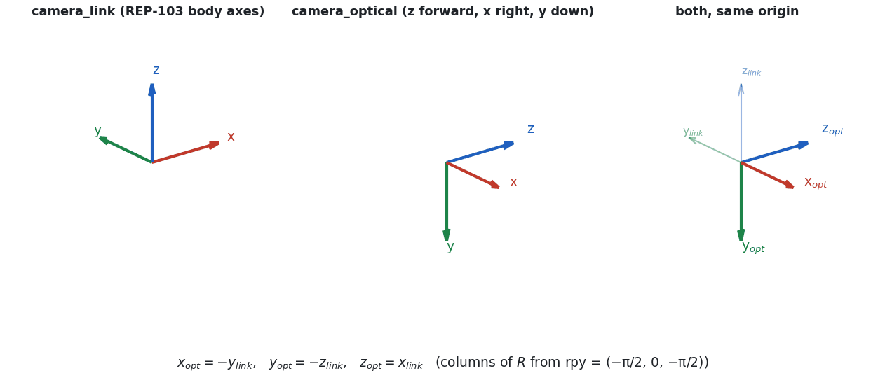
The columns of $R$ drawn: optical z lies on link x, optical x on link −y, optical y on link −z.
Check: the third column of the matrix is (1, 0, 0), so the optical axis points along camera_link x.
Task 2: Look up transforms in time
2.1 Ask for the latest transform and for one at a stamp
Run a node that asks TF for odom to base_footprint at four times. Code uses TF through a buffer and a listener;
docs/exercises/tf_lookup.py does this:
buf = Buffer() # keeps 10 s of history by default
listener = TransformListener(buf, node, spin_thread=True)
buf.lookup_transform('odom', 'base_footprint', Time()) # the latest it has
buf.lookup_transform('odom', 'base_footprint', now - Duration(seconds=30.0)) # 30 s ago
buf.lookup_transform('odom', 'base_footprint', now + Duration(seconds=0.5)) # 0.5 s ahead
buf.lookup_transform('odom', 'base_footprint', now + Duration(seconds=0.5), Duration(seconds=3.0)) # same, wait up to 3 s
lookup_transform(target, source, time) returns the transform that maps source coordinates into target coordinates, like
tf2_echo target source. The script asks once at start-up, waits 3 s of wall time, then asks the four questions:
python3 docs/exercises/tf_lookup.py --ros-args -p use_sim_time:=true
at once, now ExtrapolationException: Lookup would require extrapolation at time 56.980000, but only time 56.971000 is in the buffer, when looking up transform from frame [base_footprint] to frame [odom]
now = 58.775 s
latest, Time() ok, stamp 58.751
now - 30 s ExtrapolationException: Lookup would require extrapolation into the past. Requested time 28.775000 but the earliest data is at time 58.039000, when looking up transform from frame [base_footprint] to frame [odom]
now + 0.5 s ExtrapolationException: Lookup would require extrapolation into the future. Requested time 59.275000 but the latest data is at time 58.751000, when looking up transform from frame [base_footprint] to frame [odom]
now + 0.5 s, wait 3 s ok, stamp 59.275
Time()(zero) means "the latest you have", whatever its stamp. It does not fail for lack of time coverage, and it may be stale.- A stamp means "interpolated at this instant". For sensor data this is the right choice: the robot moved between the scan and now, and the latest transform would place the points where the robot is now, not where it measured.
- The listener holds only what it has heard since it started: here 0.7 s of simulated time, so 30 s ago is not there.
- A time that has not happened yet fails at once; with a timeout the lookup waits, and succeeds once the publisher reaches it.
Check: Time() and the lookup with a timeout succeed; the other two print into the past and into the future.
Common mistakes: the first line varies with how much the listener has heard. In two other runs it was
LookupException: "odom" passed to lookupTransform argument target_frame does not exist: no message had arrived yet.
2.2 Read an ExtrapolationException
Learn which side and by how much from the message alone. An earlier probe on the loaded machine (load average above 40) produced the three kinds:
tf2.ExtrapolationException: Lookup would require extrapolation into the past. Requested time 880.096000 but the earliest data is at time 880.100000, when looking up transform from frame [lidar_link] to frame [base_footprint]
ExtrapolationException : Lookup would require extrapolation into the future. Requested time 935.490000 but the latest data is at time 934.979000, when looking up transform from frame [base_footprint] to frame [odom]
ExtrapolationException : Lookup would require extrapolation into the past. Requested time 904.990000 but the earliest data is at time 934.400000, when looking up transform from frame [base_footprint] to frame [odom]
The first came from a node that had just started: its listener had 4 ms less history than the first scan it received needed.
The lidar lookup can fail at all because the chain from lidar_link to base_footprint includes the dynamic base_footprint
to base_link; a chain of static transforms has no time and never raises these errors. The second asked for now + 0.5 s, the
third for now − 30 s. A stamped lookup that fails into the future by a few tens of milliseconds means the publisher is late,
and a timeout fixes it.
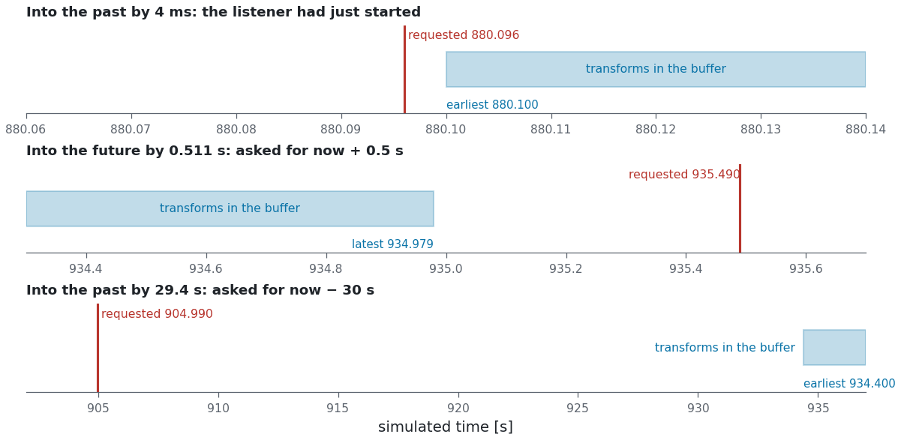
The three messages above on their own time axes (note the different scales): 4 ms before the earliest data, 0.511 s after the latest, 29.4 s before the earliest.
lidar_odom.py uses both forms: a stamped lookup with a 0.3 s timeout, and the latest transform as a fallback when the
stamped one fails on a loaded machine (chapter 9).
Check: for each of the three messages you can say whether the request was before the buffer or after it, and by how much.
2.3 Diagnose a lookup on the wrong clock
Run the same script without use_sim_time and explain the result:
python3 docs/exercises/tf_lookup.py
at once, now LookupException: "odom" passed to lookupTransform argument target_frame does not exist.
now = 1795846701.248 s
latest, Time() ok, stamp 61.757
now - 30 s ExtrapolationException: Lookup would require extrapolation into the future. Requested time 1795846671.247732 but the latest data is at time 62.740000, when looking up transform from frame [base_footprint] to frame [odom]
now + 0.5 s ExtrapolationException: Lookup would require extrapolation into the future. Requested time 1795846701.747732 but the latest data is at time 62.740000, when looking up transform from frame [base_footprint] to frame [odom]
now + 0.5 s, wait 3 s ExtrapolationException: Lookup would require extrapolation into the future. Requested time 1795846701.747732 but the latest data is at time 64.839000, when looking up transform from frame [base_footprint] to frame [odom]
The node's clock is the system clock, so "now" is a Unix time near 1.8e9 s, while the transforms are stamped in simulated
seconds. Even now − 30 s is "in the future", and no timeout helps. Only Time() works, because it ignores the clock. This
is the TF form of the silent echo of chapter 4.
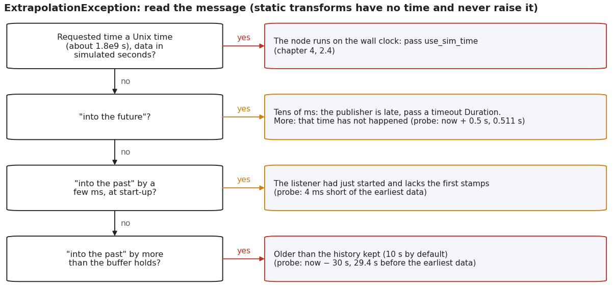
The three probe messages as a checklist. The first row is not one of them: it is the wall-clock mismatch of chapter 4, task 2.4, as a TF lookup would meet it.
Check: the requested times are about 1.8e9 s and the data near 60 s; with -p use_sim_time:=true both are near 60 s.
2.4 Let TF compose a chain
Ask for a transform across several edges; TF multiplies them for you:
ros2 run tf2_ros tf2_echo odom lidar_link
At time 53.418000000
- Translation: [0.123, -0.103, 0.526]
- Rotation: in Quaternion (xyzw) [0.000, 0.000, 0.027, 1.000]
The height is 0.1 m (base_link to lidar_link) plus 0.426 m (base_footprint to base_link); x, y and yaw are the drift
of odom to base_footprint while the robot stood.
The same chain by hand, from an earlier session: a /lidar/points message stamped 934.896 s, and the three transforms that
lookup_transform returned at that stamp. The first two only add height. The third is the drift of that session, much larger
than above:
| Transform | Translation (m) | Yaw |
|---|---|---|
base_link to lidar_link |
(0, 0, 0.1) | 0 |
base_footprint to base_link |
(0, 0, 0.426) | 0 |
odom to base_footprint |
(−0.5398, 0.2516, 0) | 7.83 degrees (cos 0.9907, sin 0.1362) |
A point at $p_\text{lidar} = (1.2545, −0.0044, 0.0219)$ is at $(1.2545, −0.0044, 0.5479)$ in base_footprint, and in odom
$$x = 0.9907 \times 1.2545 - 0.1362 \times (-0.0044) - 0.5398 = 0.7036, \qquad y = 0.1362 \times 1.2545 + 0.9907 \times (-0.0044) + 0.2516 = 0.4181,$$
with $z = 0.5479$. lookup_transform('odom', 'lidar_link', stamp) applied to the same point gave (0.7035, 0.4181, 0.5479),
2.2e-16 m from the composition done in full precision; the 0.7036 above differs in the fourth decimal because the table is
rounded. Your own numbers will differ by the drift of your odom frame.
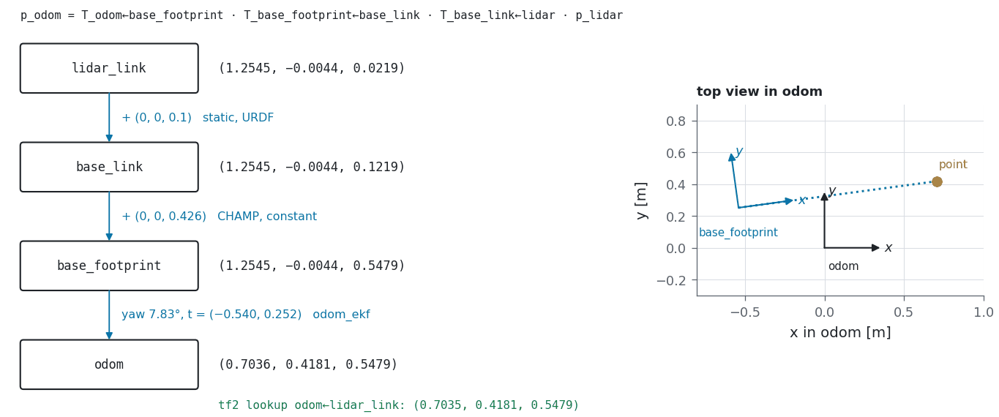
The worked example as a chain: each arrow is one transform, the coordinates beside each frame are the point in that frame. Right: the same step in top view, base_footprint turned 7.83 degrees in odom.
Check: the z of odom to lidar_link is 0.526 m, the static 0.1 m plus the dynamic 0.426 m.
Task 3: Find the faults in a broken tree
docs/exercises/broken_tree.launch.py publishes a small version of this robot's sensor tree with static transforms only. It
has two faults: one transform is wrong and one frame has no parent. Find both with the three tools before you read 3.5. Do
not read the launch file below its docstring, which lists the expected tree:
base_footprint -> base_link -> lidar_link, camera_link -> camera_optical, trunk -> imu_link
3.1 Start the broken tree
Start the five static publishers of the exercise on their own. The frame names are the robot's, so stop the stack first:
scripts/stop.sh
ros2 launch docs/exercises/broken_tree.launch.py
[INFO] [static_transform_publisher-1]: process started with pid [...]
...
[static_transform_publisher-1] [INFO] [...] [footprint_to_base]: Spinning until stopped - publishing transform
Check: ros2 node list in a second terminal shows five nodes: /base_to_camera, /base_to_lidar, /camera_to_optical,
/footprint_to_base, /trunk_to_imu.
3.2 Ask tf2_echo
Look up each sensor from base_link and compare with task 1:
ros2 run tf2_ros tf2_echo base_link lidar_link # Translation: [0.000, 0.000, 0.100], as on the robot
ros2 run tf2_ros tf2_echo base_link imu_link
[INFO] [...] [tf2_echo]: Waiting for transform base_link -> imu_link: Invalid frame ID "base_link" passed to canTransform argument target_frame - frame does not exist
[INFO] [...] [tf2_echo]: Waiting for transform base_link -> imu_link: Could not find a connection between 'base_link' and 'imu_link' because they are not part of the same tree.Tf has two or more unconnected trees.
ros2 run tf2_ros tf2_echo camera_link camera_optical
At time 0.0
- Translation: [0.000, 0.000, 0.000]
- Rotation: in Quaternion (xyzw) [-0.500, -0.500, 0.500, 0.500]
- Rotation: in RPY (radian) [-1.571, 0.000, 1.571]
- Rotation: in RPY (degree) [-90.000, 0.000, 90.000]
- Matrix:
0.000 -0.000 -1.000 0.000
1.000 0.000 0.000 0.000
-0.000 -1.000 0.000 0.000
0.000 0.000 0.000 1.000
Check: imu_link cannot be reached from base_link, and the optical rotation differs from the one in task 1.6.
Common mistakes: the first line of tf2_echo says frame does not exist even for a frame that is there; the listener has not
heard anything yet. Read the second line.
3.3 Ask tf2_monitor
Find the frame that has no parent. tf2_monitor listens for 10 s and lists every frame that has a parent:
ros2 run tf2_ros tf2_monitor
Gathering data on all frames for 10 seconds...
RESULTS: for all Frames
Frames:
Frame: base_link, published by <no authority available>, Average Delay: 59.9426, Max Delay: 59.9426
Frame: camera_link, published by <no authority available>, Average Delay: 59.9373, Max Delay: 59.9373
Frame: camera_optical, published by <no authority available>, Average Delay: 59.9426, Max Delay: 59.9426
Frame: imu_link, published by <no authority available>, Average Delay: 59.9452, Max Delay: 59.9452
Frame: lidar_link, published by <no authority available>, Average Delay: 59.9455, Max Delay: 59.9455
All Broadcasters:
Node: <no authority available> 384.467 Hz, Average Delay: 59.9426 Max Delay: 59.9455
The expected tree has six child frames; trunk is missing from the list, so nothing gives it a parent. The delay of about
60 s is the age of the static transforms, which are stamped once when their publisher starts. With two frames,
ros2 run tf2_ros tf2_monitor base_link imu_link repeats the not part of the same tree message of 3.2.
Check: the list has five frames and no trunk.
3.4 Draw it with view_frames
See both faults' effect on the shape of the tree.
ros2 run tf2_tools view_frames
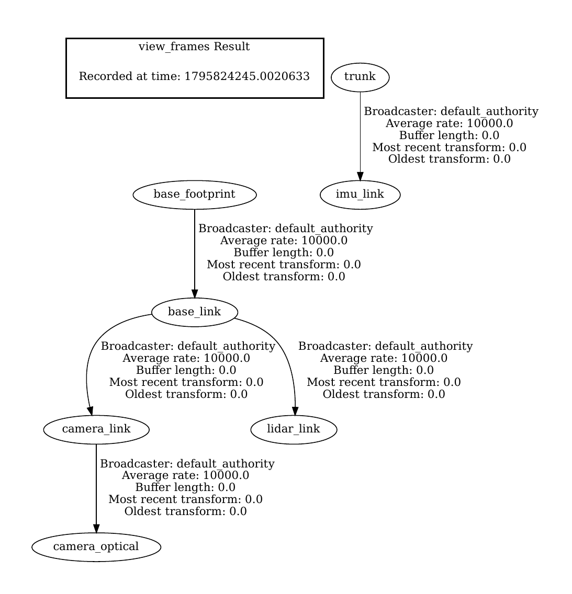
view_frames on the broken tree. Two trees: trunk to imu_link stands on its own, because nothing publishes base_link to trunk.
The edges in the .gv file:
"base_link" -> "lidar_link"
"base_footprint" -> "base_link"
"base_link" -> "camera_link"
"camera_link" -> "camera_optical"
"trunk" -> "imu_link"
Check: the drawing shows two separate trees.
3.5 Fix both and check
Correct the launch file and confirm the fix with tf2_echo and RViz. The two faults:
- Missing frame: nothing publishes
base_linktotrunk. In the robot's URDF that joint is fixed with zero offset. - Wrong transform:
camera_linktocamera_opticalhas yaw +1.5708 instead of −1.5708. Its rotation's third column is (−1, 0, 0): the optical axis points backwards, and optical x points left.
Copy the launch file, flip the yaw sign and add the missing edge:
cp docs/exercises/broken_tree.launch.py $HOME/fixed_tree.launch.py
# edit: yaw=1.5707963 -> yaw=-1.5707963, and add static('base_to_trunk', 'base_link', 'trunk'),
diff docs/exercises/broken_tree.launch.py $HOME/fixed_tree.launch.py
22c22,23
< static('camera_to_optical', 'camera_link', 'camera_optical', roll=-1.5707963, yaw=1.5707963), # fault 1: yaw sign
---
> static('camera_to_optical', 'camera_link', 'camera_optical', roll=-1.5707963, yaw=-1.5707963), # fault 1: yaw sign
> static('base_to_trunk', 'base_link', 'trunk'),
Stop the broken tree (Ctrl-C) and start yours:
ros2 launch $HOME/fixed_tree.launch.py
ros2 run tf2_ros tf2_echo camera_link camera_optical # Quaternion (xyzw) [-0.500, 0.500, -0.500, 0.500], RPY degree [-90.000, -0.000, -90.000]
ros2 run tf2_ros tf2_echo base_link imu_link # Translation: [0.000, 0.000, 0.000]
view_frames now draws one tree, with base_link to trunk to imu_link.
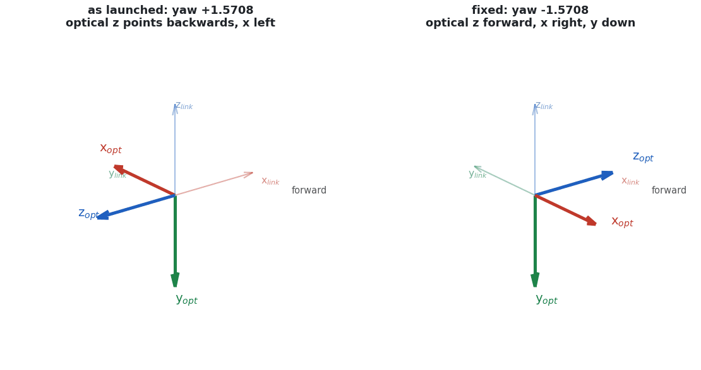
The rotation of camera_link to camera_optical from the two tf2_echo matrices above; faded axes are camera_link. Optical y points down in both, which is why the fault is easy to miss in a camera image that is only mirrored and rotated.
Look at the same two trees in RViz. Start it on the course config with base_link as the fixed frame, once with the broken
tree running and once with yours:
rviz2 -d src/go2_nav_sim/rviz/go2.rviz -f base_link
In the Displays panel, expand TF. With the broken tree its status is Warn (orange); with yours it is Ok. The figure
below has the RobotModel display unticked, to leave only the frames.
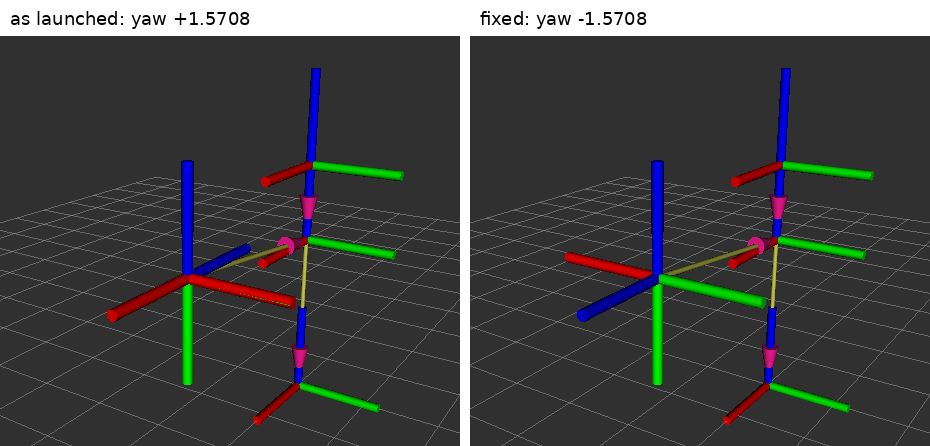
RViz with go2.rviz, fixed frame base_link, TF names off and arrows on, seen from in front of the robot and to its left; the triad nearest the viewer is camera_link and camera_optical at the same origin, and behind it, from the top, lidar_link, base_link and base_footprint. Left, as launched: optical z (blue) points back along the body. Right, fixed: optical z points forward, towards the viewer, and optical x (red) to the robot's right.
Check: tf2_echo camera_link camera_optical matches task 1.6, tf2_echo base_link imu_link prints a transform, and the TF
display in RViz reads Status: Ok.
Common mistakes: starting a second static_transform_publisher for camera_link to camera_optical next to the broken one
did not fix it. Both publish the same child; the listener in my run kept the wrong one. Fix the publisher that is wrong, do not
add a second. The same happens when the broken tree is still running while you start yours: in my run tf2_echo then printed
the broken rotation [-0.500, -0.500, 0.500, 0.500].
Before you go on, stop the fixed tree with Ctrl-C in its terminal, then check with ros2 node list that none of the five
publishers is left. scripts/stop.sh does not stop it (its patterns do not match static_transform_publisher or
ros2 launch of a file outside the packages), and a tree left running keeps publishing a static base_footprint to
base_link at z = 0.217 and its own camera frames next to the robot's publishers. Then start the stack again with
scripts/up.sh for the exercise.
Exercise
A depth pixel on the optical axis of the robot's camera reads 2.0 m. Where is that point in base_link? Work it out from
task 1.1 and 1.6, then check it with lookup_transform('base_link', 'camera_optical', Time()) on the running stack.
Answer: in camera_link the point is $R\,(0,0,2)^\top = (2, 0, 0)$; adding the 0.28 m forward and 0.03 m up of camera_link
gives (2.28, 0, 0.03) m in base_link. TF printed [2.28000000e+00 5.35897930e-08 3.00000536e-02].
Further reading
- ROS 2 documentation, Humble:
Tf2/Debugging-Tf2-Problems.rstin https://github.com/ros2/ros2_documentation (the tools of task 3 on a different broken tree). - K. M. Lynch and F. C. Park, Modern Robotics, chapter 3 (rigid-body motions): https://hades.mech.northwestern.edu/index.php/Modern_Robotics
Source: docs/05-frames-and-tf2.md